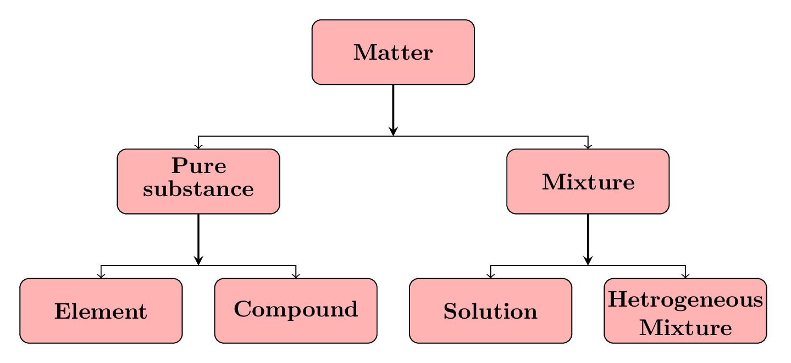

Section 8.1 Changes in Matter
Matter can undergo basically two types of changes. They are:
- Physical change: It is such a change in matter that do not alter its chemical composition. For examples:melting, freezing, boiling, condensation, and evaporation. Physical changes are kind of two-way trafic. The material transform its shape and state multiple times. For example, making jewelry from gold bar and molding them back into gold bar again, making sword from iron bar and converting sword in an iron bar again.
- Chemical change: It is such a change in matter that alter its chemical composition. Fpr examples: burning, rusting, and the formation of a chemical compound. It is a one-way trafic where material transform its physical properties but never regains the original properties by the physical process. For example, Baking a cake, making yogurt from milk. The physical properties of the milk, such as its texture and flavor, are also altered in the process. Formation of a new chemical compound such as water from hydrogen and oxygen is also a chemical change.
Subsection 8.1.1 The Classification of Matter
Instead of three phases (or states) of matter, there are three different classes of matter based on its composition and properties. They are elements, compounds, and mixture Figure 8.1.1.
- Elements: An element is a pure substance that cannot be broken down into simpler substances by any chemical means. Elements are the building blocks of all matter and are composed of only one type of atom. Examples of elements include hydrogen, oxygen, and gold.
- Compounds: A compound is a pure substance that is made up of two or more elements chemically combined in a fixed ratio. Compounds have different properties from their constituent elements and cannot be separated into their individual elements by physical means. Examples of compounds include water (\(H_2O\)), salt (\(NaCl\)), and glucose (\(C_6H_{12}O_6\)).
- Mixtures: A mixture is a combination of two or more substances in which each substance retains its own chemical properties. Mixtures can be separated into their individual components by physical means. There are two main types of mixtures: homogeneous mixtures, where the substances are evenly mixed, and heterogeneous mixtures, where the substances are not evenly mixed. Examples of mixtures include air, fruit juice, and concrete.
In homogeneous mixture substances are evenly mixed and have the same composition throughout. Homogeneous mixture is also called a solution Here are some examples of homogeneous mixtures: Salt water: When salt is dissolved in water, the result is a homogeneous mixture, in which the salt and water are evenly distributed throughout the solution. Air: Air is a mixture of gases, including nitrogen, oxygen, and trace amounts of other gases, that are evenly mixed and have the same composition throughout the entire volume of air. Honey: Honey is a homogeneous mixture of sugar and water, with the sugar and water evenly mixed throughout the entire substance. Vinegar: Vinegar is a homogeneous mixture of water and acetic acid, with the water and acetic acid evenly mixed throughout the entire substance. Milk: Milk is a homogeneous mixture of water, fat, proteins, and sugars, with the substances evenly mixed throughout the entire substance.
In heterogeneous mixture substances are not evenly mixed and have different compositions in different parts of the mixture. Heterogeneous mixtures are easy to identify, as the individual substances are easily visible and can be separated from one another by physical means. Here are some examples of heterogeneous mixtures: Fruit salad: A mixture of fruit, such as apples, bananas, and grapes, cut into pieces and combined in a bowl is a heterogeneous mixture. Each piece of fruit has its own unique composition, and the composition of the mixture changes from one part of the mixture to another. Granola: A mixture of oats, nuts, dried fruit, and sweeteners is a heterogeneous mixture, as the ingredients are not evenly mixed and the composition of the mixture changes from one part of the mixture to another. Sand and water: A mixture of sand and water is a heterogeneous mixture, as the sand particles settle to the bottom of the container and the water is clear. The composition of the mixture changes from the top of the mixture to the bottom. Soil: Soil is a mixture of minerals, organic matter, air, and water, and is a heterogeneous mixture as the composition of the soil changes from one part of the soil to another. Concrete: Concrete is a mixture of cement, sand, gravel, and water, and is a heterogeneous mixture, as the composition of the concrete changes f rom one part of the mixture to another.

Subsection 8.1.2 Atomic Theory
Atomic theory is the foundation of modern chemistry and provides a basic understanding of the nature of matter. The theory states that all matter is made up of tiny particles called atoms, which are the smallest units of matter that retain the properties of an element. Atoms are indivisible: Atoms are the smallest units of matter that can exist and cannot be broken down into smaller units. Atoms are identical: Atoms of the same element are identical and have the same number of protons, electrons, and neutrons. Atoms have structure: Atoms have a small central nucleus, which contains positively charged protons and neutral neutrons, surrounded by negatively charged electrons in shells. Atoms are arranged in the periodic table: Atoms of different elements have different numbers of protons, electrons, and neutrons and are arranged in the periodic table according to their atomic number, which is equal to the number of protons in the nucleus. Atoms can bond to form molecules: Atoms can bond together to form molecules by sharing or exchanging electrons. The properties of molecules are determined by the type of atoms and the way they are bonded together. Atoms can be ionized: Atoms can gain or lose electrons to become positively or negatively charged ions. Ions play an important role in many chemical reactions.
Molecule: A molecule is the smallest unit of a substance that retains the chemical properties of that substance and can exist as a separate entity. It is composed of two or more atoms that are chemically bonded together. In a molecule, the atoms are held together by chemical bonds, which are formed by the sharing or exchange of electrons between the atoms. The type of bonds and the arrangement of atoms in a molecule determine the chemical and physical properties of the substance. Molecules can be formed from a single type of atom, such as a molecule of oxygen (\(O_2\)), or from different types of atoms, such as a molecule of water (\(H_2O\)). The number of atoms in a molecule and the type of atoms can also vary, giving rise to a vast array of different molecules, each with its own unique properties. Molecules are the building blocks of matter and play a crucial role in many physical and chemical processes, including chemical reactions, phase transitions, and the formation of materials. A deep understanding of the structure and properties of molecules is essential for many scientific and engineering disciplines, including chemistry, biology, materials science, and environmental science.
Difference between molecule and compound: A molecule is a group of two or more atoms that are chemically bonded together. A compound is a substance made up of two or more different elements that are chemically combined in a fixed ratio. The main difference between a molecule and a compound is that a molecule is a collection of atoms that are bonded together, whereas a compound is a substance that consists of molecules made up of different elements in a fixed ratio. For example, water (\(H_2O\)) is a compound made up of hydrogen and oxygen atoms in a fixed ratio of 2:1. The smallest unit of water that retains its chemical properties is a molecule of water, which is made up of two hydrogen atoms and one oxygen atom chemically bonded together. Another example is table salt (NaCl), which is a compound made up of sodium and chlorine atoms in a fixed ratio of 1:1. The smallest unit of salt that retains its chemical properties is a molecule of salt, which is made up of one sodium atom and one chlorine atom chemically bonded together.
Hydrogen gas is made out of \(H_2\) molecules. It is not a compound. Oxygen gas is made out of \(O_2\) molecules and is also not a compound. They are made out of two atoms of the same element. Similarly, Ozone gas (\(O_3\)), nitrogen gas (\(N_2\)), chlorine substance (\(Cl_2\)) are molecule. However, carbon dioxide gas (\(CO_2\)) is a compound and molecule both, similarly, amonia (\(NH_3\)) is a compound and molecule both. Because they are made out of two different elements. Meaning all compounds are molecules but all molecules are not compounds.
Some substances are elemental such as iron bar (Fe), liquid mercury (Hg), helium gas (He), gold jewlry (Au), etc., some are molecular such as hydrogen gas (\(H_2\)), oxygen gas (\(O_2\)), ozone gas (\(O_3\)), water (\(H_2O\)), methane (\(CH_4\)), carbon dioxide gas (\(CO_2\)), amonia (\(NH_3\)), diamond (\(C_4\)), glucose (\(C_6H_{12}O_6\)) etc. diamond is a pure form of carbon, but it is not an element. An element is a substance that cannot be broken down into simpler substances by chemical means, while a molecule is a group of two or more atoms that are chemically bonded together.